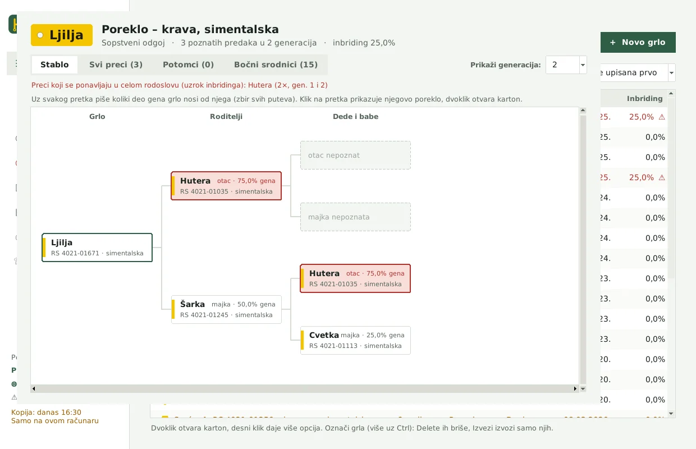

Inbriding kod stoke – šta je, kako se računa i kako ga izbeći
Parenje u srodstvu je jedna od najčešćih skrivenih šteta na farmi. Evo jednostavnog objašnjenja i tablice sa primerima.
Windows 10/11 + aplikacija za telefon · radi bez interneta · 6 jezika

Šta je inbriding
Inbriding je parenje životinja koje su u srodstvu: otac i ćerka, brat i sestra, polubrat i polusestra, rođaci. Što su roditelji bliži rod, veća je verovatnoća da potomak od oba roditelja dobije isti gen istog pretka. To je dobro kad se želi učvrstiti neka osobina, ali loše kad se time udvostruče i skrivene slabosti.
Zašto škodi
Kod potomaka iz bliskog srodstva češće se vide:
- slabija plodnost i teže ostajanje steone, suprasne ili bremenite,
- sporiji rast i manja mlečnost,
- slabija otpornost i više uginuća mladih,
- nasledne mane i bolesti koje su do tada bile skrivene.
Ova pojava se zove inbriding depresija. Ne vidi se odmah na jednom grlu, ali posle nekoliko generacija stado postaje slabije.
Koeficijent inbridinga (F)
Koeficijent inbridinga pokazuje verovatnoću da su dva gena na istom mestu kod potomka nasleđena od istog pretka. Računa se po Rajtovoj (Wright) metodi: za svakog zajedničkog pretka oca i majke prebroje se koraci kroz rodoslov i saberu doprinosi. Primeri za potomka različitih parenja (kad sami preci nisu inbridovani):
| Parenje | Inbriding potomka (F) |
|---|---|
| Otac × ćerka, majka × sin | 25 % |
| Pun brat × puna sestra | 25 % |
| Polubrat × polusestra | 12,5 % |
| Deda × unuka | 12,5 % |
| Stric (ujak) × bratanica (sestričina) | 12,5 % |
| Prvi rođaci | 6,25 % |
| Bez zajedničkih predaka | 0 % |
Mnogi odgajivači i selekcijske službe nastoje da inbriding potomka ostane ispod oko 6,25 %, a parenja preko 12,5 % izbegavaju osim kada to svesno rade iz selekcijskih razloga. Prava granica zavisi od vrste, rase i cilja, pa je dobro pitati selekcijsku službu ili veterinara.
Kako izbeći parenje u srodstvu
- Vodi oca i majku za svako grlo, od rođenja.
- Pre svakog parenja proveri zajedničke pretke, i to bar 4–5 kolena unazad.
- Menjaj priplodnog muškarca (bika, ovna, jarca, nerasta) na vreme, pre nego što se pari sa sopstvenim ćerkama.
- Kod veštačkog osemenjavanja proveri poreklo bika ili nerasta iz kataloga.
Kako HerdDoc pomaže
HerdDoc računa koeficijent inbridinga za svako grlo po Rajtovoj metodi, pokazuje udeo gena svakog pretka i označava pretka koji se ponavlja u rodoslovu. U delu za parenje za svaku ženku dobiješ listu mužjaka sa očekivanim inbridingom potomka, a plan parenja za celo stado poštuje granicu koju sam izabereš. Rodoslov radi za goveda, ovce i koze, svinje i konje.
Česta pitanja
Šta je dozvoljen inbriding kod stoke?
Ne postoji jedna granica za sve. Mnogi odgajivači nastoje da inbriding potomka bude ispod oko 6,25 % i izbegavaju parenja preko 12,5 %. Za svoju rasu pitaj selekcijsku službu.
Koliki je inbriding kod parenja oca i ćerke?
Potomak oca i ćerke ima koeficijent inbridinga 25 %, isto kao potomak punog brata i sestre (ako preci nisu inbridovani).
Kako se računa koeficijent inbridinga?
Po Rajtovoj formuli: za svaki put od oca preko zajedničkog pretka do majke računa se (1/2) na broj grla u putu, uvećano za inbriding tog pretka, i svi putevi se saberu. HerdDoc to radi automatski.
Da li HerdDoc računa inbriding za sve vrste?
Da, za goveda, ovce, koze, svinje, konje i vrste koje sam dodaš.
Probaj HerdDoc besplatno 30 dana
Posle toga besplatno do 20 grla. Za veća stada od 49 € godišnje.